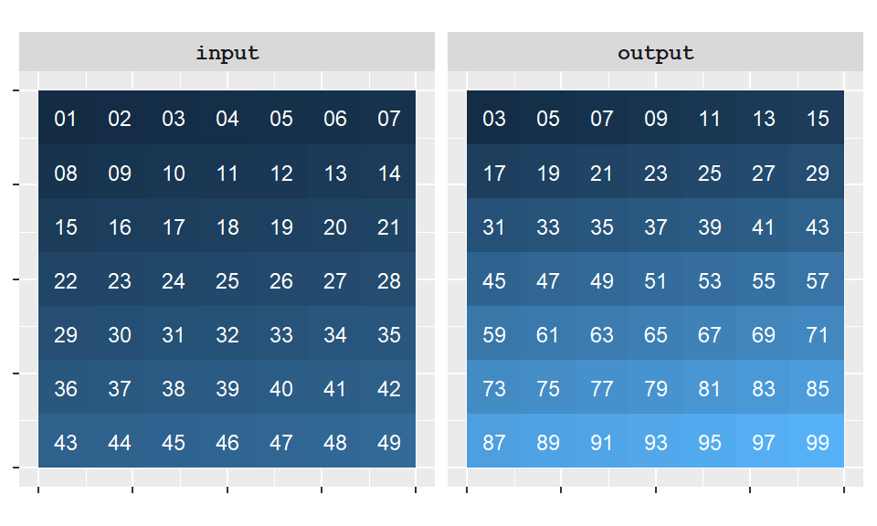
(2 × input) + 1. The value assigned to each output cell depends only on the corresponding input cell.
In Chapter 2, raster data were introduced as a spatial data model in which the study area is represented as a regular grid of cells. Unlike vector data, where attributes are linked to discrete features such as points, lines, and polygons, raster datasets assign a value to every cell in the grid. Because each cell stores a value at a known location, mathematical and logical operations can be applied systematically across the entire study area.
This cell-based structure makes raster data particularly well suited for spatial analysis. For example, we may wish to:
These types of analyses involve transforming and combining raster values to generate new spatial information.
One framework for performing such analyses is Map Algebra, a system of spatial operations developed by Dana Tomlin (Tomlin 1990). Map Algebra treats raster layers as mathematical objects that can be manipulated using arithmetic, logical, and statistical operations. The framework organizes raster analysis according to the spatial context used in the calculation.
Tomlin identified three primary categories of raster operations:
O’Sullivan and Unwin (O’Sullivan and Unwin 2010) later proposed a fourth category:
Together, these four categories form the foundation of raster-based spatial analysis and provide a useful framework for understanding many GIS tools and modeling workflows.
A useful way to distinguish among map algebra operations is to consider how much of the raster is involved in computing each output value. At one extreme, an operation may use only the value stored in a single cell. At the other extreme, it may draw information from the entire raster. Between these extremes are operations that use neighboring cells or predefined regions.
We begin with local operations, the simplest type of map algebra function, in which the output value is computed using only information associated with the same location.
Local operations are the simplest type of map algebra function. They compute a new value for each cell using only information associated with that same location. In other words, the value assigned to an output cell depends exclusively on the value or values occupying the corresponding cell location in one or more input rasters.
Because only coincident cell locations are used in the calculation, local operations do not require information from neighboring cells or from other parts of the raster. Common local operations include arithmetic calculations, logical comparisons, and reclassification of raster values.
For instance, starting with an original raster layer, we might apply a sequence of operations–first multiplying each cell value by 2, then adding 1. The result is a new raster in which each cell reflects the cumulative effect of those operations applied to the corresponding cell in the original layer. This is an example of a unary operation, where only a single raster is involved in the computation.
The following figure illustrates a local operation in which every cell value is transformed using the expression output = (2 x input) + 1.

(2 × input) + 1. The value assigned to each output cell depends only on the corresponding input cell.
Local operations can also involve multiple raster layers. In the previous example, the output values were derived from a single raster layer. However, local operations can also combine values from two or more raster layers at the same location.
For example, two rasters can be added together by summing the values of coincident cells. The resulting raster assigns each output cell the combined value of the corresponding cells from the input layers. This is an example of a binary operation because two raster layers participate in the calculation.
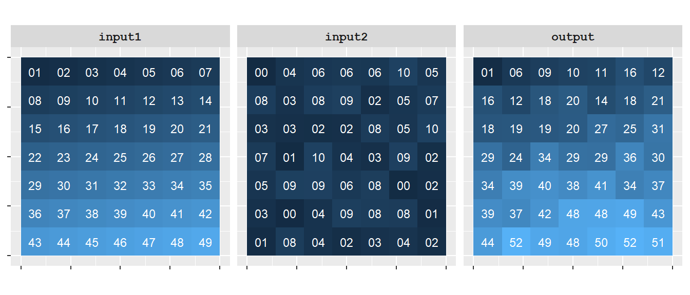
Local operations also include reclassification, where a range of input raster values is assigned a new, common value. Rather than performing arithmetic on raster values, reclassification groups values into categories that may be easier to interpret or analyze. Common applications include converting continuous elevation values into elevation classes, grouping land suitability scores into categories such as low, medium, and high suitability, or simplifying a raster prior to further analysis.
For example, we might reclassify the input raster values as follows:
| Original values | Reclassified values |
|---|---|
| 1-10 | 10 |
| 11-20 | 20 |
| 21-30 | 30 |
| 31-40 | 40 |
| 41-50 | 50 |
In this example, every input value between 1 and 10 is assigned an output value of 10, values between 11 and 20 are assigned 20, and so on. Because the output value depends only on the value of the corresponding input cell, reclassification remains a local operation.
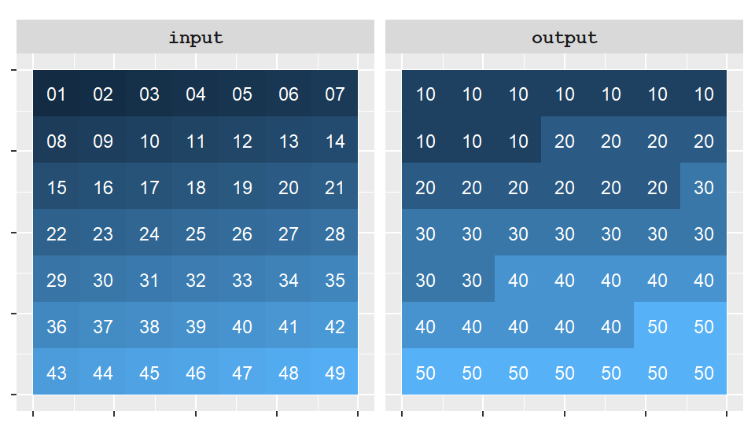
The next category of functions, known as focal operations, expands the scope of the analysis by incorporating information from neighboring cells when computing each output value.
Focal operations differ from local operations in that they incorporate information from neighboring cells when computing a new value for each location. Whereas local operations use only the value associated with the same cell location, focal operations define a neighborhood around each cell and use information from that neighborhood in the calculation.
The neighborhood is commonly centered on the cell being evaluated and may consist of the eight immediately adjacent cells, a larger square or circular window, or another user-defined shape. The output value assigned to the center cell therefore depends not only on its own value, but also on the values of nearby cells.
For example, a focal operation might calculate the average value of all cells within the neighborhood and assign that average to the center cell. This approach is often used for smoothing data, reducing local variability, detecting spatial patterns, and identifying transitions across a surface.
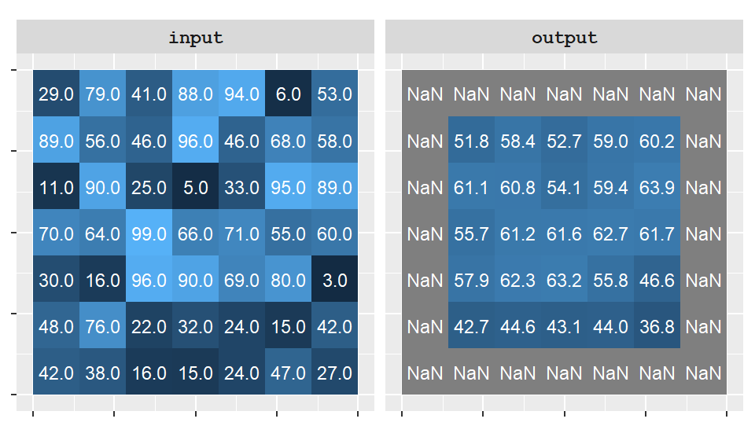
Notice in the example above that the edge cells in the output raster have been assigned a value of NA (No Data). This occurs because the neighborhood around those cells extends beyond the raster boundary, where no values exist. These boundary-related issues are commonly referred to as edge effects.
Different GIS applications handle edge effects differently. Some assign a NoData value whenever the full neighborhood cannot be evaluated, while others ignore the missing cells and compute the summary statistic using only the available neighboring values. The latter approach is demonstrated in the next example.
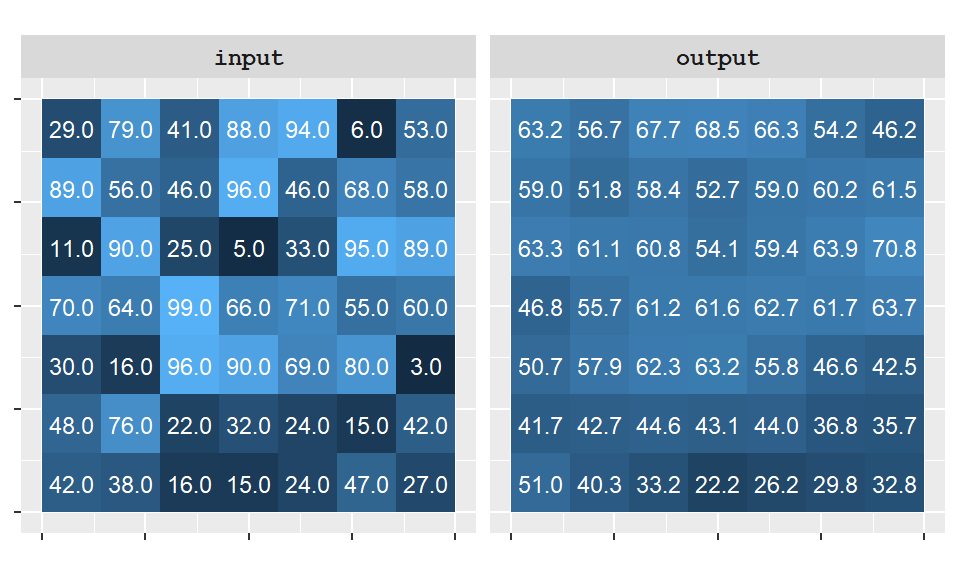
Focal (or neighborhood) operations require the definition of a window region, commonly referred to as a kernel. A kernel defines which neighboring cells contribute to the calculation performed at each location. In the examples above, a simple 3×3 kernel was used, where each output value was influenced by the values of cells in the surrounding neighborhood.
The kernel itself can vary in both size and shape. For example, a focal operation might use a 3x3 square, or a circular neighborhood defined by a specified radius. The choice of kernel influences the spatial scale of the analysis and therefore the resulting output raster.
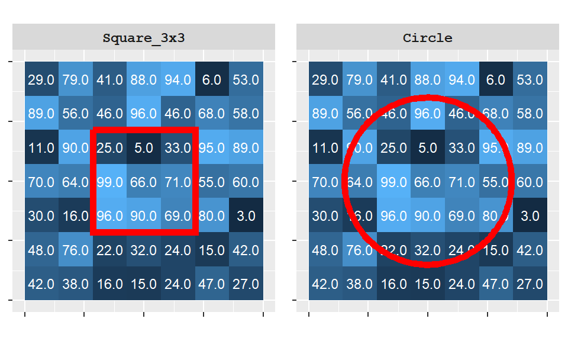
Figure 10.6 illustrates two common neighborhood definitions. In practice, focal operations are not limited to selecting a neighborhood shape; they can also specify which cells within that neighborhood participate in the calculation. For example, a 3×3 square kernel may include all nine cells or exclude the center cell, depending on the analytical objective.
The following example uses a 3×3 square kernel in which the center cell is excluded. As a result, each output value is computed from the eight neighboring cells surrounding the focal location rather than from the focal cell itself.
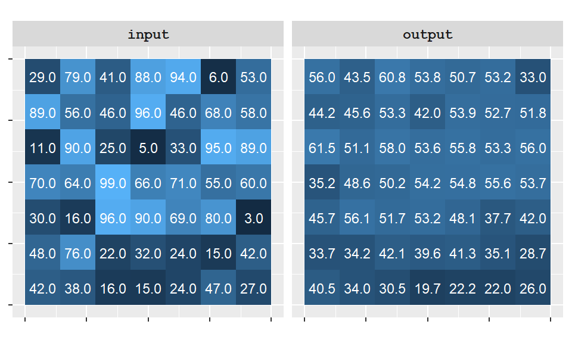
In addition to defining the shape and size of the neighborhood, a kernel can also specify how much influence each neighboring cell has on the output value. This influence is expressed through a set of weights assigned to the cells within the kernel.
For example, in a 3×3 neighborhood used for focal averaging, each cell might contribute an equal weight of 1/9 to the final value. Such a kernel treats all neighboring cells as equally important. However, weights can also be assigned unequally to emphasize some cells more than others. These weighted neighborhoods are often defined using kernel functions.
One commonly used kernel function is the Gaussian kernel, which assigns greater weight to cells near the center of the neighborhood and progressively smaller weights to cells farther away. As a result, nearby cells exert a stronger influence on the output value than distant cells.
The following example applies a Gaussian kernel to the same raster used in the previous examples.
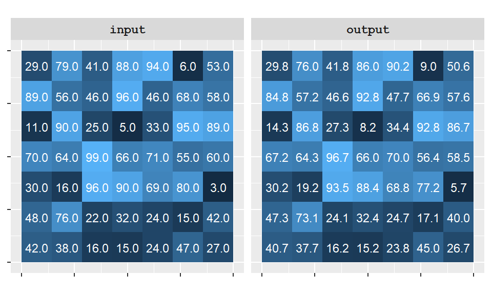
Thus far, focal operations have summarized values within neighborhoods centered on individual cells. In many applications, however, we are interested in summarizing values across larger predefined regions such as watersheds, counties, or management units. These are the focus of zonal operations.
Zonal operations differ from local and focal operations in that they summarize values across predefined regions rather than individual cells or neighborhoods. Whereas focal operations define a neighborhood around every cell, zonal operations define larger regions, called zones, that may contain many cells.
A zone is typically derived from a separate raster or polygon layer and represents a meaningful geographic region such as a watershed, county, land parcel, or landcover class. All cells belonging to the same zone are treated as a single analytical unit.
Zonal operations compute a summary statistic for each zone using the values from another raster layer. Common summary statistics include the mean, sum, minimum, maximum, and standard deviation.
In the following example, raster cell values are aggregated into three zones whose boundaries are delineated by red polygons. Each output zone is assigned the average value of the cells contained within that zone.
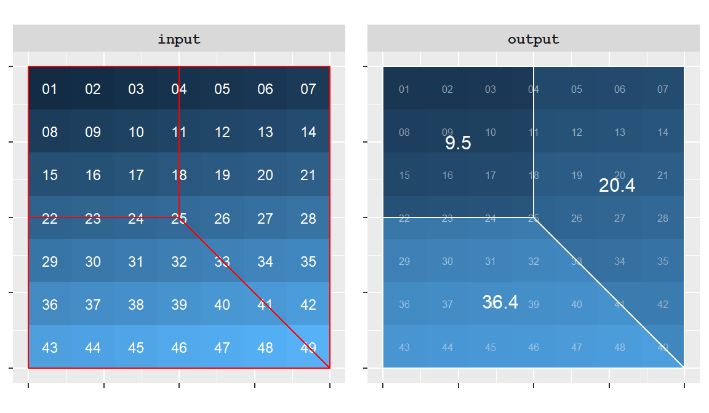
Although zonal operations can generate new spatial layers, the output is often tabular rather than spatial. In many GIS workflows, the goal is to summarize a raster variable for a set of spatial regions rather than create a new map. For example, a zonal operation might be used to calculate the average elevation within each state, the total population within each watershed, or the percentage of each county covered by water. The resulting output is typically a table in which each zone is associated with one or more summary statistics. Thus, zonal operations serve as an important bridge between raster and vector data by summarizing raster values for meaningful geographic regions.
Local, focal, and zonal operations all compute output values using information drawn from a limited spatial context. In contrast, some raster operations require information from the entire study area when calculating output values. These are known as global operations.
Global operations and functions may use some or all input cells when computing the value of each output cell. Unlike local, focal, and zonal operations, which rely on information from a limited spatial context, global operations draw information from potentially the entire study area.
A common example is the Euclidean Distance tool, which calculates the shortest straight-line distance between each cell and a specified source or destination. In the example below, a new raster assigns to each cell the distance to the nearest cell with a value of 1-note that only two such cells exist in the input raster.
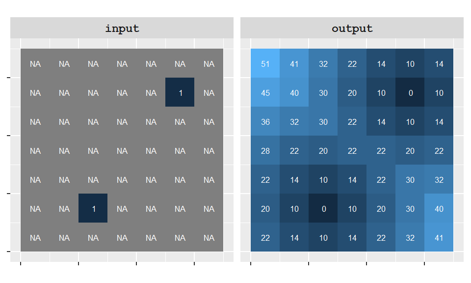
Euclidean distance is only one example of a global operation. Other global functions may compute summary statistics for an entire raster, identify least-cost paths across a landscape, or evaluate measures of spatial dependence. What these approaches have in common is that the calculation potentially depends on information drawn from all locations in the study area.
Thus far, we have focused on the spatial context of raster operations—whether calculations are performed at individual cells, within neighborhoods, across zones, or using information from an entire raster. Regardless of the spatial context, raster calculations are ultimately built from a relatively small set of operators and functions.
These operators and functions can be grouped into three broad categories:
These building blocks can be used individually or combined to create more sophisticated map algebra expressions.
Many map algebra operations rely on familiar mathematical expressions. In fact, several mathematical operators have already been introduced in the local operation examples, including multiplication and addition. These operators manipulate raster values using arithmetic rules similar to those used in spreadsheets and programming languages.
Common mathematical operators include addition, subtraction, multiplication, division, and the modulo (or modulus) operator, which returns the remainder of a division. Mathematical functions can also be applied to raster values. Examples include square-root, logarithmic, trigonometric, and exponential functions.
The following table lists a few commonly used operators and functions together with their ArcGIS and R syntax.
| Operation | ArcGIS Syntax | R Syntax | Example |
|---|---|---|---|
| Addition | + |
+ |
input1 + input2 |
| Subtraction | - |
- |
input1 - input2 |
| Multiplication | * |
* |
input1 * input2 |
| Division | / |
/ |
input1 / input2 |
| Modulo | Mod() |
%% |
Mod(input1, 100), input1 %% 10 |
| Square root | SquareRoot() |
sqrt() |
SquareRoot(input1), sqrt(input1) |
Mathematical operators are frequently used to transform raster values, combine multiple raster layers, and compute suitability or risk indices from several input variables.
The operators and functions introduced thus far generate new numeric raster values. In many GIS applications, however, we are interested in identifying locations that satisfy specific criteria rather than computing new numeric quantities. Such operations rely on logical comparison operators.
Unlike mathematical operators, which generate new numeric values, logical comparison operators evaluate whether a condition is true or false. The result is typically stored as a value of 1 if the condition is true and 0 if the condition is false.
Logical comparison operators include greater than, less than, equal, and not equal.
| Logical comparison | Syntax |
|---|---|
| Greater than | > |
| Less than | < |
| Equal | == |
| Not equal | != |
For example, the following figure compares two rasters on a cell-by-cell basis using the expression input1 > input2. Cells where the condition is true are assigned a value of 1, whereas cells where the condition is false are assigned a value of 0.
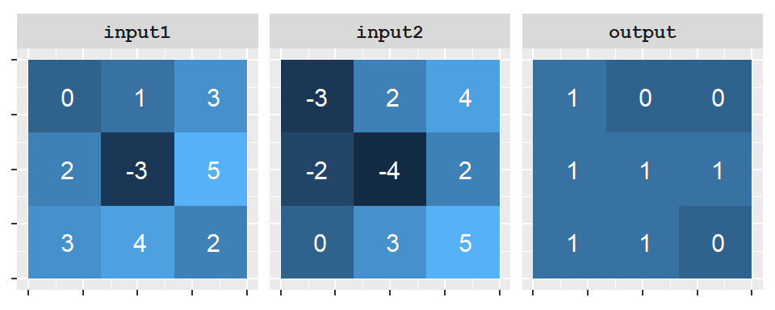
input1 > input2. Each output cell is assigned a value of 1 when the corresponding cell in input1 is greater than the corresponding cell in input2, and a value of 0 otherwise.
Logical comparison operations are commonly used to identify locations that satisfy specified criteria. For example, they can be used to select areas with elevations greater than 500 m, slopes steeper than 15°, or distances less than 100 m from a road. The resulting binary raster can then be used in subsequent map algebra operations.
When assessing whether two cells are equal, some programming environments such as R and ArcGIS’s Raster Calculator require the use of the double equality syntax, ==, as in input1 == input2. In these programming environments, the single equality syntax is usually interpreted as an assignment operator so input1 = input2 would instruct the computer to assign the cell values in input2 to input1 (which is not what we want to do here).
Some applications make use of special functions to test a condition. For example, ArcGIS has a function called Con(condition, out1, out2) which assigns the value out1 if the condition is met and a value of out2 if it’s not. For example, ArcGIS’s raster calculator expression
Con( input1 > input2, 1, 0)outputs a value of 1 if input1 is greater than input2 and 0 if not. It generates the same output as the one shown in the above figure. In many programming environments, including ArcGIS and R, TRUE and FALSE can be represented numerically as 1 and 0, respectively. As a result, the expression input1 > input2 often produces the same output as Con(input1 > input2, 1, 0).
The comparison operators introduced in this section evaluate a single condition. In many GIS applications, however, we are interested in locations that must satisfy multiple conditions simultaneously. Such expressions are constructed using Boolean operators.
Comparison operators evaluate a single condition and return a value of TRUE or FALSE (often represented as 1 and 0). In many GIS applications, however, a single condition is not sufficient. We may wish to identify locations that satisfy multiple criteria simultaneously. For example, a suitability analysis might seek locations that are both within 100 m of a road and on slopes less than 15°.
Boolean operators provide a way to combine multiple logical conditions into a single expression. The three Boolean operators are AND, OR and NOT.
| Boolean | ArcGIS | R | Example |
|---|---|---|---|
| AND | & | & | input1 & input2 |
| OR | | |
| |
input1 | input2 |
| NOT | ~ |
! |
~input2, ! input2 |
In many programming environments, any non-zero value is treated as TRUE, whereas a value of 0 is treated as FALSE. The Boolean operators act on these logical states rather than on the original raster values.
For example:
TRUE only if both conditions are true.TRUE if at least one condition is true.TRUE to FALSE and FALSE to TRUE.The following example demonstrates the AND operator applied to two rasters. Because non-zero values are treated as TRUE, a cell in the output raster is assigned a value of 1 only when both corresponding input cells are non-zero.
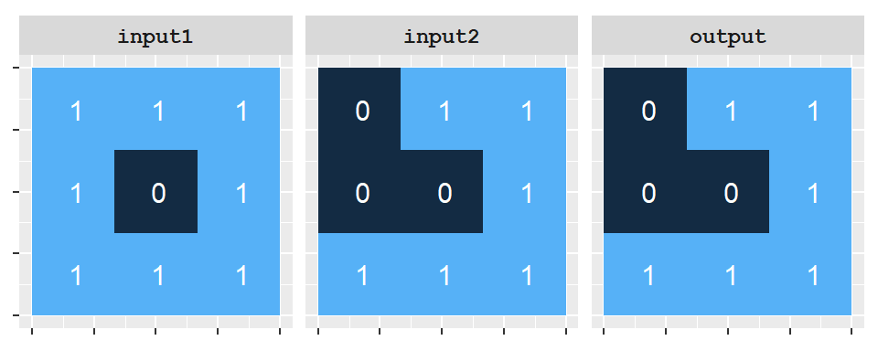
input1 AND input2. Because all non-zero values are interpreted as TRUE, an output cell is assigned a value of 1 only when both corresponding input cells are non-zero. Otherwise, the output value is 0.
The AND operator is often used to identify locations that satisfy multiple criteria simultaneously. Two other commonly used Boolean operators are OR and NOT. The OR operator returns TRUE if at least one of the specified conditions is true, whereas the NOT operator reverses a logical state, converting TRUE values to FALSE and FALSE values to TRUE.
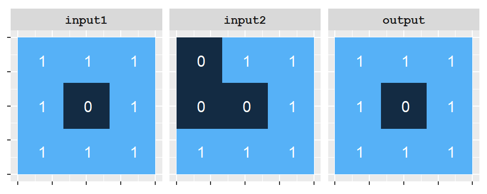
input1 OR input2. Because all non-zero values are interpreted as TRUE, an output cell is assigned a value of 1 whenever at least one of the corresponding input cells is non-zero. Otherwise, the output value is 0.
The NOT operator is particularly useful when excluding locations from an analysis. For example, if a raster uses non-zero values to indicate suitable locations and zeros to indicate unsuitable locations, applying the NOT operator reverses this classification. The following example demonstrates the effect of applying the NOT operator to a raster layer.
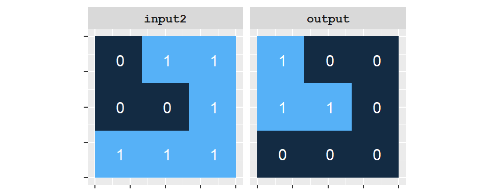
NOT input2. Cells with a value of 0 (FALSE) in the input raster are assigned a value of 1 (TRUE) in the output raster, whereas all non-zero values (TRUE) are converted to 0 (FALSE).
In practice, raster analyses rarely rely on a single comparison or Boolean operation. More often, multiple conditions are combined to identify locations that meet a specific set of criteria. This approach is common in suitability analysis, where candidate locations must satisfy several environmental, geographic, or regulatory requirements simultaneously.
Complex map algebra expressions are typically constructed by first evaluating individual conditions using comparison operators. Each comparison produces a raster of TRUE and FALSE values (often represented as 1 and 0). These logical rasters can then be combined using Boolean operators such as AND, OR, and NOT.
For example, suppose we wish to identify locations where raster values in input1 are greater than 0 but less than 4, and where corresponding values in input2 are also greater than 0. This expression can be written as ((input1 > 0) & (input1 < 4)) & (input2 > 0).
The following figure illustrates the result of applying this combined expression to the two raster layers.
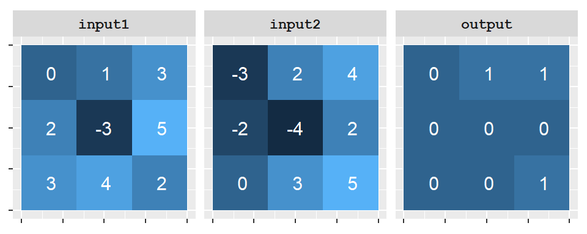
input1>0) & (input1<4)) & (input2>0). A value of 1 in the output raster indicates that the condition is true and a value of 0 indicates that the condition is false.
Expressions such as this form the foundation of many raster suitability analyses. For example, suppose we are interested in identifying locations suitable for a new solar farm. We might require that:
Each criterion can be evaluated separately using comparison operators. The resulting logical rasters can then be combined using Boolean operators to identify locations that satisfy all requirements simultaneously.
In practice, many raster suitability analyses assign scores to criteria and combine them using mathematical operators in addition to Boolean constraints. For example, slope, solar exposure, and distance to infrastructure might each be assigned suitability scores that are summed or weighted to produce an overall suitability index, while Boolean expressions are used to exclude areas that fail to meet minimum requirements.
This chapter introduced Map Algebra, a framework for analyzing raster data using mathematical and logical operations.
Raster data are well suited to map algebra because every cell stores a value at a known location.
Map algebra operations can be grouped into four categories:
Raster calculations can be built using mathematical, logical comparison, and Boolean operators.
Comparison operators evaluate conditions and return TRUE/FALSE (or 1/0) values.
Boolean operators such as AND, OR, and NOT combine multiple conditions into a single expression.
Map algebra provides the foundation for many raster-based analyses including suitability modeling, terrain analysis, and environmental modeling.